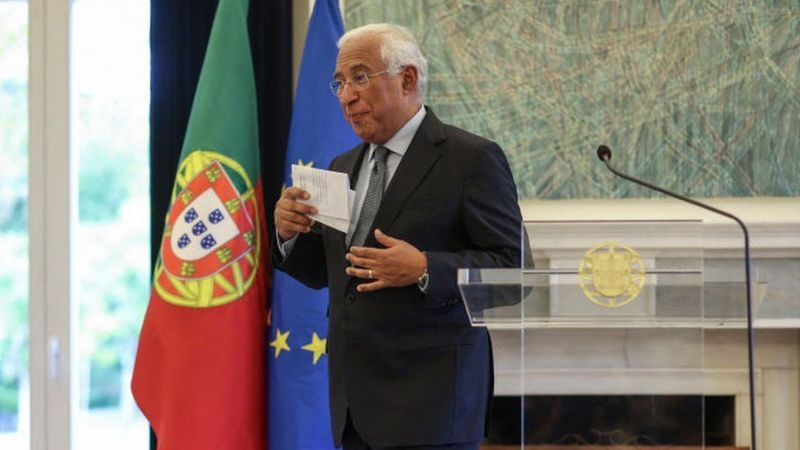
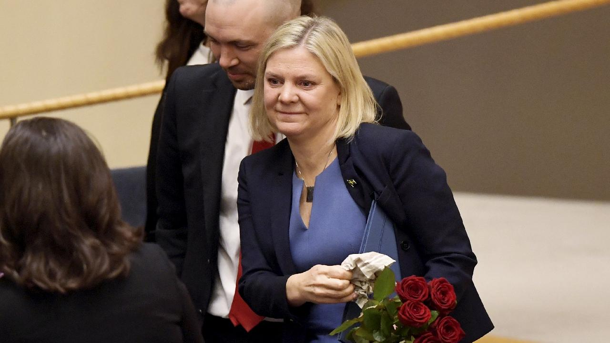
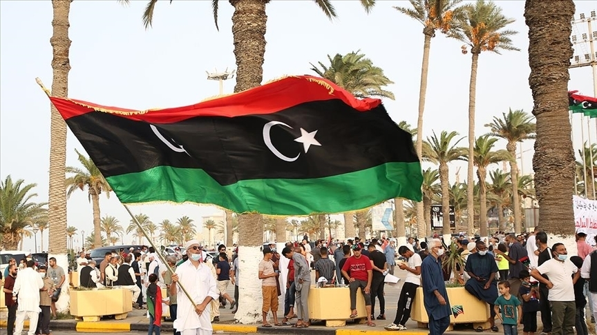

Portekiz Başbakanı Costa yolsuzluk soruşturmasının ardından istifa
etti
Portekiz Başbakanı António Costa, yolsuzluk iddialarına ilişkin bir
soruşturma kapsamında müfettişlerin resmi konutunda arama yapmasının
ardından istifasını cumhurbaşkanına sunduğunu açıkladı. Costa, şüpheli
olarak kendisinin adının geçmediğini, ancak soruşturma nedeniyle
görevde kalamayacağını söyledi. Savcılıktan Salı günü yapılan
açıklamada, lityum madenleri ve hidrojen üretimi için verilen
imtiyazların soruşturulduğu belirtildi. Público gazetesine göre beş
kişi gözaltına alındı.

İsveç’te ülkenin ilk kadın başbakanı olarak seçilen Magdalena
Andersson saatler sonra görevini bıraktı
İsveç'in ilk kadın başbakanı Magdalena Andersson, görevine başladıktan
saatler sonra istifa etti. Çarşamba günü İsveç Parlamentosu'nun
görevini onayladığı Andersson, koalisyon ortağı Yeşiller Partisi'nin
hükümetten çekilmesi ve kendisi tarafından hazırlanan bütçenin de
parlamentodan geçmemesinin ardından görevini bıraktı. Parlamento
Sosyal Demokrat Parti'nin lideri Andersson'un bütçesi yerine
muhalefetin hazırladığı ve göçmen karşıtı aşırı sağ bir bütçeyi
oyladı. Gazetecilere yaptığı açıklamada, "Meclis başkanına istifa
talebimi ilettim" diyen Andersson, ayrıca tek başına iktidar olarak
yeniden başbakan olmayı deneyeceğini de sözlerine ekledi.

Libya'da planlanan seçimler ertelendi
Libya Parlamentosu Yüksek Seçim Kurulu (YSK), ülkede 24 Aralık Cuma
günü gerçekleşmesi planlanan başkanlık ve parlamento seçimlerinin
ertelendiğini resmi olarak açıkladı. Son günlerde seçimin ertelenmesi
veya iptal edilmesinin kaçınılmaz olduğu tartışılıyordu. Yüksek Seçim
Kurulu, yasal anlaşmazlıklar ve aday listesinde belirsizlikler olduğu
gerekçesiyle bugün seçimlerin erteleneceği açıklamasını yaptı. Seçim
için henüz yeni bir tarih belirlenmedi. Libya'da oy kullanmak üzere
kayıtlı seçmen sayısındaki yükseliş, ülkenin seçime olumlu
yaklaştığının göstergesi olarak değerlendiriliyordu, ancak bu durumda
seçimin ne zaman yapılacağı belirsiz.